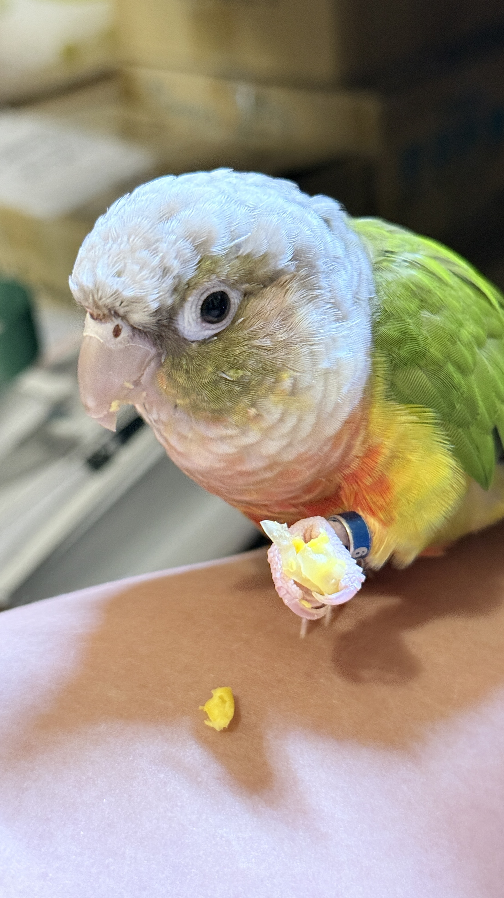

🪐 鸚鵡星球
●
個人名片 / 吃貨紀錄
水果糖
🦜專業吃貨 小太陽鸚鵡好夥伴！
「決定你成為什麼樣的人，不是你的能力而是你的選擇。」
✨ #社會工作
🤝 #資源連結
💡 #問題解決
🌻
🍿
🦜 小太陽鸚鵡認證

大家好我是愛吃鬼水果糖
歡迎水果糖的粉絲們一起來哈哈大笑！
🌟 粉絲必記三個關鍵詞 🌟
🥰
可愛
💚
很可愛
🤩
超級可愛
✨
做事最在乎：完美
別看我平時愛吃又愛搗蛋，認真起來我可是最在乎「完美」！不管是尋找美食還是解決問題，都要做到最棒的狀態。
💯 吃貨的完美主義

🏠 鸚鵡星球日常任務
每天宅在家裡吃跟睡跟搗蛋！
問我現在主要在做什麼？身為鸚鵡星球的專業吃貨，我的每日行程就是「每天宅在家裡吃跟睡跟搗蛋」！偶爾也用社會工作、資源連結與問題解決的超能力陪伴大家喔！
🧗♀️ 一路走來的故事
連滾帶爬的超級成長路
怎麼走到現在的？其實就是「連滾帶爬」四個字！雖然過程跌跌撞撞超有戲，但也因此練就了一身幽默感，把辛苦都變成能讓粉絲哈哈大笑的可愛日常！

🍊 跌倒了沒關係，先吃顆糖再爬起來！ 🍬
🛋️
正事以外的我：超廢
把力氣都拿去吃跟搗蛋了，其他時間的我其實「超廢」，只想舒舒服服地躺平放空！
🤫
別人不知道的小事實：超級懶
偷偷告訴你，我其實「超級懶」（笑），所以最擅長用最省力的方式完成問題解決！
🦜
給水果糖的粉絲們
🍬
謝謝你們看到這裡！有沒有哈哈大笑呀？😆
希望這張來自鸚鵡星球、充滿吃貨能量與小太陽鸚鵡陪伴的便當格名片，有成功讓你哈哈大笑！記得把可愛、很可愛、超級可愛的水果糖記在心裡喔！